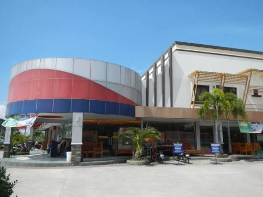
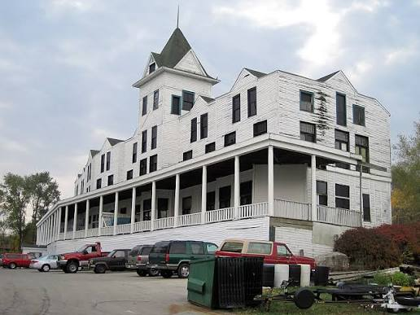
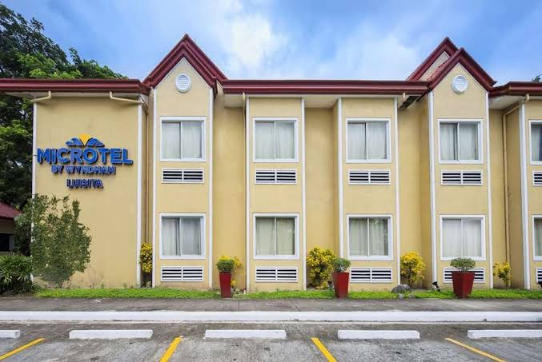

Hotels
Tarlac's hotels cater to both business and leisure travelers, offering reliable comfort, professional service, and convenient access to the city's key landmarks and commercial areas. Whether you are staying for one night or a full week, you will find well-maintained rooms and attentive staff ready to make your visit smooth.
Featured Hotels
- Hotel Luisita
-

My Hotel Tarlac -

Microtel by Wyndham
About These Hotels
- Hotel Luisita: Set within the prestigious Luisita estate, this hotel offers spacious well-furnished rooms, a swimming pool, function halls, and manicured grounds. It is a top choice for both leisure guests and corporate visitors who want a refined stay that reflects the elegance of the estate itself.
- My Hotel Tarlac: A reliable mid-range option along the main highway. Rooms come with flat-screen TVs, hot and cold showers, and complimentary breakfast — ideal for travelers passing through Central Luzon who want comfort without overspending.
- Microtel by Wyndham Tarlac: Backed by an international hotel brand, Microtel brings globally consistent standards to Tarlac. Compact, smartly designed rooms with all essentials covered. Popular with business travelers and trekkers heading to Mt. Pinatubo in nearby Capas.
Amenities & Services
- In-Room Amenities: All listed hotels offer air-conditioned rooms, free Wi-Fi, private bathrooms, cable TV, and 24-hour front desk assistance as standard.
- Dining: On-site restaurants serve both Filipino and international dishes. Hotel Luisita in particular is known for its well-regarded dining area serving classic Filipino fare using fresh local ingredients.
- Event & Business Facilities: Most hotels in Tarlac City have function rooms available for seminars, corporate meetings, and private celebrations, making them a practical base for events in the province.
Tips for Staying in a Tarlac Hotel
- Book in Advance During Summer: April and May see a surge in Pinatubo trekkers and local tourists. Rooms fill up quickly, especially on weekends, so booking at least a week ahead is recommended.
- Ask About Tarlac Packages: Some hotels offer bundled rates that include guided tours to nearby attractions like the Aquino Museum or Monasterio de Tarlac — worth asking about at check-in.
- Transport from Hotels: Tricycles and ride-sharing apps are readily available outside most hotels. Staff can also arrange vehicle rentals for day trips to Capas or other destinations.